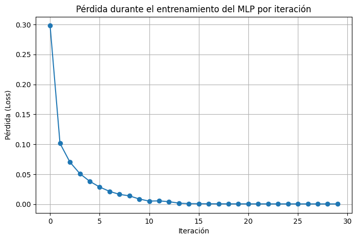

━━━━━━━━━━━━━━━━━━━━━━━━━━━━━━━━━━━━━━━━ 26.7/26.7 MB 19.7 MB/s eta 0:00:00 ━━━━━━━━━━━━━━━━━━━━━━━━━━━━━━━━━━━━━━━━ 5.7/5.7 MB 32.5 MB/s eta 0:00:00 ━━━━━━━━━━━━━━━━━━━━━━━━━━━━━━━━━━━━━━━━ 233.5/233.5 kB 8.5 MB/s eta 0:00:00 ━━━━━━━━━━━━━━━━━━━━━━━━━━━━━━━━━━━━━━━━ 147.8/147.8 kB 5.6 MB/s eta 0:00:00 ━━━━━━━━━━━━━━━━━━━━━━━━━━━━━━━━━━━━━━━━ 114.7/114.7 kB 3.8 MB/s eta 0:00:00 ━━━━━━━━━━━━━━━━━━━━━━━━━━━━━━━━━━━━━━━━ 85.0/85.0 kB 2.3 MB/s eta 0:00:00 ━━━━━━━━━━━━━━━━━━━━━━━━━━━━━━━━━━━━━━━━ 569.1/569.1 kB 10.8 MB/s eta 0:00:00 ━━━━━━━━━━━━━━━━━━━━━━━━━━━━━━━━━━━━━━━━ 203.2/203.2 kB 3.6 MB/s eta 0:00:00 ━━━━━━━━━━━━━━━━━━━━━━━━━━━━━━━━━━━━━━━━ 78.6/78.6 kB 4.4 MB/s eta 0:00:00
Implementado un Perceptrón multi-capa usando frameworks y MLFlow

Ejecutando registro en modo local=sqlite:///mlruns.dbSeguimiento de experimentos con MLFlow
Iteration 1, loss = 0.29809553
Iteration 2, loss = 0.10153217
Iteration 3, loss = 0.07025477
Iteration 4, loss = 0.05107289
Iteration 5, loss = 0.03813628
Iteration 6, loss = 0.02863240
Iteration 7, loss = 0.02136907
Iteration 8, loss = 0.01639116
Iteration 9, loss = 0.01391393
Iteration 10, loss = 0.00862180
Iteration 11, loss = 0.00514989
Iteration 12, loss = 0.00551735
Iteration 13, loss = 0.00416624
Iteration 14, loss = 0.00174071
Iteration 15, loss = 0.00094037
Iteration 16, loss = 0.00082533
Iteration 17, loss = 0.00067903
Iteration 18, loss = 0.00057994
Iteration 19, loss = 0.00053067
Iteration 20, loss = 0.00050842
Iteration 21, loss = 0.00048905
Iteration 22, loss = 0.00047281
Iteration 23, loss = 0.00045934
Iteration 24, loss = 0.00044890
Iteration 25, loss = 0.00043982
Iteration 26, loss = 0.00042988
Iteration 27, loss = 0.00042256
Iteration 28, loss = 0.00041607
Training loss did not improve more than tol=0.000100 for 10 consecutive epochs. Setting learning rate to 0.020000
Iteration 29, loss = 0.00040552
Iteration 30, loss = 0.00040366833e0c3c36ce4ae798373b3255e88fb2